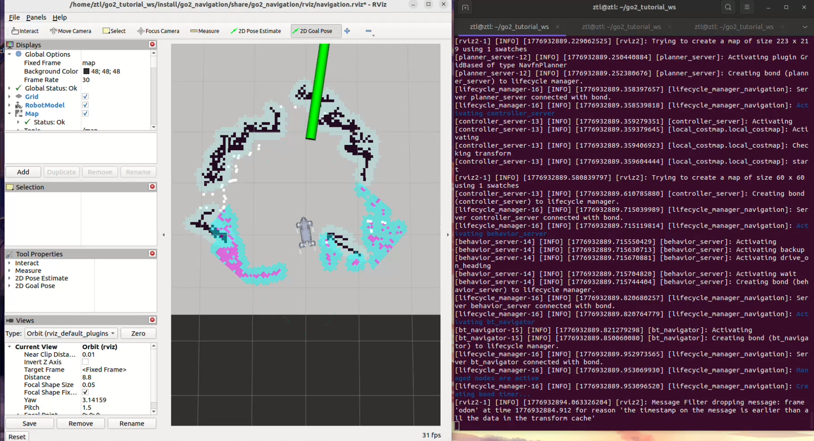

第 12 章 实机 Nav2 2D 基线¶
第 11 章我们已经拿到了一张可用的 2D 地图。现在终于轮到一个很上头的时刻:让 Go2 在实机上接入 Nav2,自己规划、自己走到目标点。但你也会马上看到,这条路的上限其实很明确:它能跑通,却远没到“够用”的程度。
本章两条硬性前提,不满足别往下做
- RViz 必须真的弹出来。
2D Pose Estimate这一步只能在 RViz 里点,没有 RViz 就没有初始位姿,AMCL 一直瞎猜 → Nav2 全部卡在Please set the initial pose→ 看上去"起来了,其实一步都走不动"。启动后若没看到 RViz 窗口,先排查图形环境和 launch 配置,别急着发目标点。 2D Pose Estimate必须在发 Goal 前做。AMCL 不会读心,你没告诉它"机器人在地图哪儿",它就只能在整张图里撒粒子。没看到粒子云收敛前,发再多目标点都没意义。
本章你将学到¶
- 认识 Nav2 里几块最核心的模块:地图服务、定位、全局规划、局部控制、恢复行为和生命周期管理
- 理解为什么 Go2 明明是四足机器人,我们却先故意把它当成一个“平地 2D 移动底座”来跑基线
- 创建
go2_navigation包,写出一份能直接复用的nav2_params.yaml和navigation.launch.py - 用
twist_mux把导航控制、恢复行为和人工接管收束成一条安全的/cmd_vel输出链 - 学会判断这套 L1 + 2D Nav2 方案到底卡在哪儿,为下一章的升级动机做好准备
背景与原理¶
Nav2 到底是什么¶
Nav2 可以理解成 ROS2 时代最常见的一套“移动机器人导航操作系统”。它不只是一份路径规划器,而是一组协同工作的节点:
| 组件 | 作用 | 你在本章会看到什么 |
|---|---|---|
map_server |
读取并发布静态地图 | 加载第 11 章保存下来的 my_map.yaml |
amcl |
在已知地图里做 2D 定位 | 发布 map → odom,让机器人知道自己在图上哪儿 |
planner_server |
计算全局路径 | 从当前位置到目标点画一条可走的路线 |
controller_server |
跟踪路径并输出速度指令 | 往 /cmd_vel_nav 发平地速度命令 |
bt_navigator |
负责“先规划、再跟踪、失败就恢复”的总调度 | 这是 Nav2 的任务编排中枢 |
behavior_server |
提供原地转、后退、等待等恢复动作 | 目标失败时经常就是它在救场 |
lifecycle_manager |
按顺序激活前面这些节点 | 不然你会看到一堆节点起了但没真正进入工作态 |
旧资料里你有时会看到 recoveries_server 这个名字。在 ROS2 Humble 这一代里,它已经统一成 behavior_server 了。别在这儿被版本差异阴一下。
BehaviorTree 是什么¶
一句话版:BehaviorTree(行为树)就是一棵“任务执行树”,它把规划、跟踪、检查是否失败、触发恢复动作这些步骤串成一个可反复重试的流程。
下面这张图故意只保留主线,你先看懂“它怎么组织流程”就够了,不用一头扎进自定义节点:
flowchart TD
A[收到目标点] --> B[计算全局路径]
B --> C[局部控制跟踪路径]
C --> D{到达目标?}
D -- 是 --> E[任务成功]
D -- 否 --> F{路径失效 / 控制失败?}
F -- 否 --> C
F -- 是 --> G[恢复行为: 清图层 / 原地转 / 后退 / 等待]
G --> B这也是为什么 Nav2 不是“一个规划器”那么简单。它更像一个有明确失败处理逻辑的导航工作流。
为什么现在先做 Go2 的 2D 基线¶
如果你只看机器人宣传图,会觉得 Go2 明明是四足,为什么导航第一步却走得像个保守的小车?
原因很现实:
- 第 11 章我们已经拿到了可用的
/scan和 2D 栅格地图,继续往前接 Nav2 的成本最低 - Nav2 的 2D 栈成熟、资料多、RViz 可视化直观,很适合第一次把“自主到点”跑起来
- 真正的 3D 导航链不只是“把 2D 参数改成 3D”那么简单,它会牵涉地形表达、局部可通行性、仿真验证和更重的算力负担
所以本章的定位很明确:
先让 Go2 在平地上自己走起来,再诚实地承认它的天花板。
2D 基线在四足机器人上的隐含假设¶
这部分一定要先讲清楚,不然后面你会误以为“既然跑通了,那就说明方案天然正确”。
| 2D 栈默认假设 | 在普通移动底盘上为什么常成立 | 到 Go2 身上会遇到什么问题 |
|---|---|---|
| 地面基本是平的 | 小车通常就在平地滚动 | 四足上坡、下台阶、跨坎时机身姿态变化更大 |
| 障碍都能在扫描平面里看见 | 2D 雷达那一圈经常正好扫到桌腿、墙角 | 高于或低于扫描高度的障碍会直接漏掉 |
| 里程计比较平滑 | 轮式底盘连续滚动,震动模式单一 | 四足步态会把 IMU 和里程计噪声放大 |
| 机器人外形能近似成一个圆 | 小车外轮廓稳定 | Go2 的腿部摆动和机身姿态会让“圆形足迹”只是保守近似 |
这就是为什么本章我们会故意做两件“看起来很怂”的事:
- 把
max_vel_y关成0.0,先不追求侧移 - 把 AMCL 的运动模型设成
DifferentialMotionModel,先把它当成一个平地差速式底盘
这不是在否认 Go2 的能力
Go2 当然能做更复杂的运动。但本章追求的是先稳定跑通一条教学基线,不是第一天就把侧移、地形、三维避障全塞进来。后面章节会专门讨论为什么这条基线会撞到天花板。
架构总览¶
数据流¶
先把整条链路画出来,你会更容易判断“到底是雷达没来、定位没稳,还是控制链断了”。
flowchart LR
A[L1 雷达] --> B["/utlidar/cloud_deskewed"]
B --> C[pointcloud_timestamp_fix]
C --> D["/utlidar/cloud_fixed"]
D --> E[pointcloud_to_laserscan]
E --> F["/scan"]
G["第 11 章保存的地图<br/>my_map.yaml + my_map.pgm"] --> H[map_server]
H --> I["/map"]
F --> J[amcl]
I --> J
K["/odom + odom→base TF<br/>go2_driver_py"] --> J
J --> L["map→odom TF"]
I --> M[planner_server]
F --> N[controller_server]
L --> M
L --> N
O[bt_navigator] --> M
O --> N
P[behavior_server] --> Q["/cmd_vel_behavior"]
N --> R["/cmd_vel_nav"]
R --> S[twist_mux]
Q --> S
T["/cmd_vel_teleop"] --> S
S --> U["/cmd_vel"]
U --> V["第 4 章 go2_twist_bridge"]
V --> W[Go2 高层运动接口]TF 树里最关键的一件事¶
这章最容易把人卡死的,不是 AMCL 算法本身,而是坐标系名字写错。
本书这一套 Go2 链路里,关键 TF 应该长这样:
请盯住最后这个名字:
- Go2 驱动侧用的是
base - Nav2 默认教程里常写的是
base_footprint或base_link
如果你不手动覆盖,最典型的报错就是:
这不是 Nav2 坏了,而是你把默认坐标系照抄进 Go2 了。
环境准备¶
前置章节成果¶
开始之前,你至少要有三样东西:
- 第 4 章的
go2_twist_bridge,并且它默认订阅/cmd_vel - 第 6 章的
go2_driver_py,能稳定提供/odom和odom → base - 第 11 章的
go2_slam,已经能输出/scan,并且你手里有一张保存好的 2D 地图
如果这三样里缺一件,先别硬启动 Nav2。你只会在报错堆里来回翻,最后不知道是谁先坏的。
安装本章依赖¶
如果你是顺着第 11 章往后做,pointcloud_to_laserscan 多半已经装过了。这里把本章需要的包一次补齐:
# Nav2 主体 + 官方 bringup 资源 + 指令仲裁 twist_mux
sudo apt install -y \
ros-humble-navigation2 \
ros-humble-nav2-bringup \
ros-humble-pointcloud-to-laserscan \
ros-humble-twist-mux \
ros-humble-teleop-twist-keyboard
装完顺手查一下:
# 有输出就说明包已经在当前系统里了
ros2 pkg list | grep -E "nav2_amcl|nav2_bt_navigator|twist_mux|pointcloud_to_laserscan"
地图文件怎么放¶
第 11 章保存地图时,推荐路径是:
路径是示例,按你实际工作空间改
教材里所有 高亮 标注的路径都是示例。你的工作空间在哪里,就把这些路径替换成你自己的,别硬套。
这里有两个小规则:
.yaml和.pgm要放在同一目录里,因为yaml里会引用图片文件- 如果你想复制到别的位置,请两个文件一起复制,别只搬
yaml
本章的 navigation.launch.py 会要求你显式传入地图路径。这样做有点啰嗦,但最稳,也最贴合第 11 章“地图是你自己现场建出来的”这个事实。
第一次发 Nav2 Goal 前先把安全条件拉满
这是 Go2 第一次按导航栈自己动,别把它当成“只是一个软件演示”。
- 机器人前方至少空出 2 米
- 身边有人能随时遥控接管或急停
- 初始测试先选平地、宽通道、静态环境
- 别上来就对着玻璃门、台阶口、密集人流发目标点
实现步骤¶
本章只新增一个包:go2_navigation。它不写自定义控制器,也不碰自定义 BT 节点,只负责把现有 Nav2 组件和前面章节的成果接起来。
步骤一:创建 go2_navigation 包¶
先在工作空间里创建导航包:
# 在 src/ 下新建一个只放配置和 launch 的包
cd ==~/unitree_go2_ws==/src
ros2 pkg create go2_navigation \
--build-type ament_python
mkdir -p go2_navigation/config go2_navigation/launch go2_navigation/maps go2_navigation/rviz
当前工作区的 go2_navigation 是 ament_python 包。它本身不写业务节点,但用 setup.py 把 launch/、config/、maps/ 和 rviz/ 都安装到 share 目录,这样 ros2 launch 才能在安装空间里找到配置。
接着确认 go2_navigation/setup.py 里的 data_files 包含下面几行:
from glob import glob
import os
from setuptools import find_packages, setup
package_name = "go2_navigation"
setup(
name=package_name,
version="0.0.0",
packages=find_packages(exclude=["test"]),
data_files=[
(
"share/ament_index/resource_index/packages",
["resource/" + package_name],
),
("share/" + package_name, ["package.xml"]),
(os.path.join("share", package_name, "launch"), glob("launch/*.launch.py")),
(os.path.join("share", package_name, "config"), glob("config/*.yaml")),
(os.path.join("share", package_name, "maps"), glob("maps/*")),
(os.path.join("share", package_name, "rviz"), glob("rviz/*.rviz")),
],
install_requires=["setuptools"],
zip_safe=True,
maintainer="student",
maintainer_email="student@example.com",
description="Nav2 baseline launch and configuration for Go2 tutorial chapter 12.",
license="Apache-2.0",
tests_require=["pytest"],
entry_points={"console_scripts": []},
)
这一步很不起眼,但漏掉之后你会收获一种特别烦人的报错体验:
- 包能编译
source install/setup.bash也没报错- 一到
ros2 launch go2_navigation navigation.launch.py就说 launch、YAML 或navigation.rviz文件不存在
步骤二:写 twist_mux.yaml¶
我们先把速度仲裁器搭起来。目标很简单:
- 导航控制输出到
/cmd_vel_nav - 恢复行为输出到
/cmd_vel_behavior - 人工接管输出到
/cmd_vel_teleop - 最终统一汇总回
/cmd_vel,继续复用第 4 章的桥接节点
在 go2_navigation/config/twist_mux.yaml 写入:
twist_mux:
ros__parameters:
topics:
navigation:
topic: /cmd_vel_nav
timeout: 0.5
priority: 10
behavior:
topic: /cmd_vel_behavior
timeout: 0.5
priority: 50
teleop:
topic: /cmd_vel_teleop
timeout: 0.5
priority: 100
优先级的意思很好理解:
- 没人接管时,导航控制最低优先级,正常走
- 触发恢复动作时,
behavior_server可以暂时覆盖导航速度 - 你一按键盘,人工接管优先级最高,直接拿走控制权
这比让多个节点直接抢 /cmd_vel 稳得多。
步骤三:写 nav2_params.yaml¶
这一份参数文件的主基调只有两个词:
- 保守
- 诚实
它不是“Go2 的最终最优参数”,而是一个平地实机第一次跑通 Nav2 的基线值。你先把这份跑起来,再根据现场情况一点点调。
在 go2_navigation/config/nav2_params.yaml 写入:
amcl:
ros__parameters:
use_sim_time: false
# ---- 坐标系与输入 ----
base_frame_id: base
global_frame_id: map
odom_frame_id: odom
scan_topic: scan
tf_broadcast: true
transform_tolerance: 1.0
# ---- AMCL 基本模型 ----
robot_model_type: nav2_amcl::DifferentialMotionModel
laser_model_type: likelihood_field
alpha1: 0.2
alpha2: 0.2
alpha3: 0.2
alpha4: 0.2
alpha5: 0.2
beam_skip_distance: 0.5
beam_skip_error_threshold: 0.9
beam_skip_threshold: 0.3
do_beamskip: false
lambda_short: 0.1
sigma_hit: 0.2
z_hit: 0.7
z_short: 0.05
z_max: 0.05
z_rand: 0.25
# ---- 粒子与更新频率 ----
min_particles: 1000
max_particles: 5000
pf_err: 0.05
pf_z: 0.99
resample_interval: 1
recovery_alpha_fast: 0.1
recovery_alpha_slow: 0.001
update_min_d: 0.1
update_min_a: 0.02
max_beams: 180
laser_likelihood_max_dist: 4.0
laser_max_range: 100.0
laser_min_range: -1.0
# ---- 启动时给一组默认位姿,RViz 里仍建议重新 2D Pose Estimate ----
set_initial_pose: true
initial_pose:
x: 0.0
y: 0.0
z: 0.0
yaw: 0.0
save_pose_rate: 0.5
bt_navigator:
ros__parameters:
use_sim_time: false
global_frame: map
robot_base_frame: base
odom_topic: /odom
bt_loop_duration: 10
default_server_timeout: 20
default_nav_to_pose_bt_xml: "/opt/ros/humble/share/nav2_bt_navigator/behavior_trees/navigate_w_replanning_only_if_path_becomes_invalid.xml"
default_nav_through_poses_bt_xml: "/opt/ros/humble/share/nav2_bt_navigator/behavior_trees/navigate_w_replanning_only_if_path_becomes_invalid.xml"
# 这一串是 Humble 默认 BT 插件列表,先别手痒删
plugin_lib_names:
- nav2_compute_path_to_pose_action_bt_node
- nav2_compute_path_through_poses_action_bt_node
- nav2_smooth_path_action_bt_node
- nav2_follow_path_action_bt_node
- nav2_spin_action_bt_node
- nav2_wait_action_bt_node
- nav2_assisted_teleop_action_bt_node
- nav2_back_up_action_bt_node
- nav2_drive_on_heading_bt_node
- nav2_clear_costmap_service_bt_node
- nav2_is_stuck_condition_bt_node
- nav2_goal_reached_condition_bt_node
- nav2_goal_updated_condition_bt_node
- nav2_globally_updated_goal_condition_bt_node
- nav2_is_path_valid_condition_bt_node
- nav2_initial_pose_received_condition_bt_node
- nav2_reinitialize_global_localization_service_bt_node
- nav2_rate_controller_bt_node
- nav2_distance_controller_bt_node
- nav2_speed_controller_bt_node
- nav2_truncate_path_action_bt_node
- nav2_truncate_path_local_action_bt_node
- nav2_goal_updater_node_bt_node
- nav2_recovery_node_bt_node
- nav2_pipeline_sequence_bt_node
- nav2_round_robin_node_bt_node
- nav2_transform_available_condition_bt_node
- nav2_time_expired_condition_bt_node
- nav2_path_expiring_timer_condition
- nav2_distance_traveled_condition_bt_node
- nav2_single_trigger_bt_node
- nav2_goal_updated_controller_bt_node
- nav2_is_battery_low_condition_bt_node
- nav2_navigate_through_poses_action_bt_node
- nav2_navigate_to_pose_action_bt_node
- nav2_remove_passed_goals_action_bt_node
- nav2_planner_selector_bt_node
- nav2_controller_selector_bt_node
- nav2_goal_checker_selector_bt_node
- nav2_controller_cancel_bt_node
- nav2_path_longer_on_approach_bt_node
- nav2_wait_cancel_bt_node
- nav2_spin_cancel_bt_node
- nav2_back_up_cancel_bt_node
- nav2_assisted_teleop_cancel_bt_node
- nav2_drive_on_heading_cancel_bt_node
- nav2_is_battery_charging_condition_bt_node
controller_server:
ros__parameters:
use_sim_time: false
controller_frequency: 20.0
min_x_velocity_threshold: 0.001
min_y_velocity_threshold: 0.5
min_theta_velocity_threshold: 0.001
failure_tolerance: 0.3
progress_checker_plugin: progress_checker
goal_checker_plugins: [general_goal_checker]
controller_plugins: [FollowPath]
progress_checker:
plugin: nav2_controller::SimpleProgressChecker
required_movement_radius: 0.5
movement_time_allowance: 10.0
general_goal_checker:
plugin: nav2_controller::SimpleGoalChecker
stateful: true
xy_goal_tolerance: 0.25
yaw_goal_tolerance: 0.25
FollowPath:
plugin: dwb_core::DWBLocalPlanner
debug_trajectory_details: true
min_vel_x: 0.0
min_vel_y: 0.0
max_vel_x: 0.30
max_vel_y: 0.0
max_vel_theta: 0.50
min_speed_xy: 0.0
max_speed_xy: 0.30
min_speed_theta: 0.0
acc_lim_x: 0.30
acc_lim_y: 0.0
acc_lim_theta: 1.0
decel_lim_x: -0.30
decel_lim_y: 0.0
decel_lim_theta: -1.0
vx_samples: 20
vy_samples: 0 # ⚠ 必须是 0:既然 max_vel_y=0,y 方向就不要采样,否则 DWB 会 SIGABRT
vth_samples: 40 # DWB 在 Humble 参数里叫 vth_samples,不是 vtheta_samples
sim_time: 1.7
linear_granularity: 0.05
angular_granularity: 0.025
transform_tolerance: 0.2
xy_goal_tolerance: 0.25
trans_stopped_velocity: 0.25
short_circuit_trajectory_evaluation: true
stateful: true
critics: [RotateToGoal, Oscillation, BaseObstacle, GoalAlign, PathAlign, PathDist, GoalDist]
BaseObstacle.scale: 0.02
PathAlign.scale: 32.0
PathAlign.forward_point_distance: 0.1
GoalAlign.scale: 24.0
GoalAlign.forward_point_distance: 0.1
PathDist.scale: 32.0
GoalDist.scale: 24.0
RotateToGoal.scale: 32.0
RotateToGoal.slowing_factor: 5.0
RotateToGoal.lookahead_time: -1.0
local_costmap:
local_costmap:
ros__parameters:
use_sim_time: false
update_frequency: 5.0
publish_frequency: 2.0
global_frame: odom
robot_base_frame: base
rolling_window: true
width: 3
height: 3
resolution: 0.05
robot_radius: 0.3
plugins: [voxel_layer, inflation_layer]
voxel_layer:
plugin: nav2_costmap_2d::VoxelLayer
enabled: true
publish_voxel_map: true
origin_z: 0.0
z_resolution: 0.05
z_voxels: 16
max_obstacle_height: 2.0
mark_threshold: 0
observation_sources: scan
scan:
topic: /scan
data_type: LaserScan
clearing: true
marking: true
raytrace_max_range: 3.0
raytrace_min_range: 0.0
obstacle_max_range: 2.5
obstacle_min_range: 0.0
max_obstacle_height: 2.0
inflation_layer:
plugin: nav2_costmap_2d::InflationLayer
cost_scaling_factor: 3.0
inflation_radius: 0.15
static_layer:
plugin: nav2_costmap_2d::StaticLayer
map_subscribe_transient_local: true
always_send_full_costmap: true
global_costmap:
global_costmap:
ros__parameters:
use_sim_time: false
update_frequency: 1.0
publish_frequency: 1.0
global_frame: map
robot_base_frame: base
resolution: 0.05
track_unknown_space: true
robot_radius: 0.30
plugins: [static_layer, obstacle_layer, inflation_layer]
static_layer:
plugin: nav2_costmap_2d::StaticLayer
map_subscribe_transient_local: true
obstacle_layer:
plugin: nav2_costmap_2d::ObstacleLayer
enabled: true
observation_sources: scan
scan:
topic: /scan
data_type: LaserScan
clearing: true
marking: true
raytrace_max_range: 3.0
raytrace_min_range: 0.0
obstacle_max_range: 2.5
obstacle_min_range: 0.0
max_obstacle_height: 2.0
inflation_layer:
plugin: nav2_costmap_2d::InflationLayer
cost_scaling_factor: 3.0
inflation_radius: 0.15
always_send_full_costmap: true
planner_server:
ros__parameters:
use_sim_time: false
expected_planner_frequency: 20.0
planner_plugins: [GridBased]
GridBased:
plugin: nav2_navfn_planner/NavfnPlanner
tolerance: 0.5
use_astar: false
allow_unknown: true
behavior_server:
ros__parameters:
use_sim_time: false
global_frame: odom
robot_base_frame: base
costmap_topic: local_costmap/costmap_raw
footprint_topic: local_costmap/published_footprint
cycle_frequency: 10.0
transform_tolerance: 0.1
simulate_ahead_time: 2.0
max_rotational_vel: 1.0
min_rotational_vel: 0.4
rotational_acc_lim: 3.2
behavior_plugins: [backup, drive_on_heading, wait]
backup:
plugin: nav2_behaviors/BackUp
drive_on_heading:
plugin: nav2_behaviors/DriveOnHeading
wait:
plugin: nav2_behaviors/Wait
map_server:
ros__parameters:
use_sim_time: false
yaml_filename: ""
这份配置里,最值得你反复理解的是下面七个键。
robot_radius¶
这里我们把 Go2 在 2D 地图里先近似成一个半径 0.30 m 的圆。
- 设得太小:路径会更激进,但脚或机身更容易贴着障碍蹭过去
- 设得太大:窄门、桌椅缝、走廊边缘会被 Nav2 判成“根本过不去”
如果你现场一看就觉得机器人总在离墙很远的位置绕大圈,先怀疑这个值是不是偏大了。
inflation_radius¶
膨胀半径决定“障碍物周围要留出多大安全气泡”。当前工作区代码先给 0.15 m,目的是减少地图噪声被过度膨胀后堵死局部 costmap 的概率。
- 设大一点:更保守,但容易出现“明明有路,它说过不去”
- 设小一点:更敢走窄路,但实机擦边风险会上来
max_vel_x¶
这是平地前进速度上限。本章用 0.30 m/s,故意和第 4 章桥接里的保守限幅对齐。
- 它不是 Go2 的物理极限
- 它只是本章这套 L1 + 2D 基线的安全上限
第一次调参时,宁可先慢一点,也别为了图爽把 AMCL 和局部控制一起抖散了。
laser_max_range: 100.0 不是在宣称 L1 的有效量程
当前工作区代码把 AMCL 里的 laser_max_range 放到 100.0,主要是避免 AMCL 这层过早截断第 11 章已经生成好的 /scan。它不是在替 L1 的官方硬件标称量程背书。教材里凡是这类过滤上限,都优先按工程可用范围理解。
acc_lim_x¶
前向加速度上限直接影响“起步和刹车有多猛”。本章给 0.30 m/s²,目的就是别让 Go2 在小空间里一脚油门往前窜。
- 设得太大:轨迹看着更灵活,实机更容易抖、急停也更生硬
- 设得太小:看起来会“很怂”,有时追不上局部路径
controller_frequency¶
局部控制器多久算一次速度命令。本章用 20.0 Hz。
- 太低:你会明显感觉机器人反应慢、转角发虚、局部路径跟踪一顿一顿
- 太高:如果板载负载压不住,实际频率反而掉得更厉害
你不用死盯参数本身,更该盯 controller_server 日志里实际跑出来的频率。
global_frame¶
在 Nav2 里,全局规划和全局定位都应站在 map 这个坐标系上。
- 用
map:目标点和地图是一个世界坐标,路径稳定 - 错写成
odom:短时间也许还能动,但一旦里程计漂了,全局目标会跟着飘
robot_base_frame¶
这章里所有涉及机器人底座坐标系的地方,都要坚定写成 base。
bt_navigator.robot_base_framelocal_costmap.robot_base_frameglobal_costmap.robot_base_framebehavior_server.robot_base_frameamcl.base_frame_id
只要有一个地方偷懒沿用了 base_footprint 或 base_link,你后面就等着查 TF 吧。
这份参数最核心的设计选择
你会发现 YAML 里把 max_vel_y 彻底关成了 0.0,AMCL 也选了 DifferentialMotionModel。这不是因为 Go2 不能侧移,而是因为我们先把它收敛成一台“平地低速 2D 移动平台”。这样做很保守,但第一次让实机 Nav2 跑通时最省命。
步骤四:写总启动文件 navigation.launch.py¶
接下来把前面几章的成果接起来。这个 launch 负责做六件事:
- 复用第 6 章的
go2_driver_py - 复用第 11 章的
pointcloud_timestamp_fix和pointcloud_to_laserscan - 启动
twist_mux - 启动
map_server和amcl - 用
TimerAction稍微等一会儿,再启动planner_server、controller_server、bt_navigator、behavior_server - 可选拉起 RViz,直接观察定位、路径和 costmap
在 go2_navigation/launch/navigation.launch.py 写入:
"""
实机 Nav2 2D 基线:
驱动 + 点云转 LaserScan + AMCL + Nav2 + twist_mux + RViz
"""
from pathlib import Path # 处理 share 目录里的配置文件路径
from ament_index_python.packages import get_package_share_directory
from launch import LaunchDescription # ROS2 launch 的顶层描述对象
from launch.actions import DeclareLaunchArgument, IncludeLaunchDescription, TimerAction
from launch.conditions import IfCondition # 条件启动 RViz
from launch.launch_description_sources import PythonLaunchDescriptionSource
from launch.substitutions import LaunchConfiguration
from launch_ros.actions import Node # 启动 ROS2 节点
def generate_launch_description() -> LaunchDescription:
map_yaml = LaunchConfiguration("map")
use_rviz = LaunchConfiguration("use_rviz")
nav_share = Path(get_package_share_directory("go2_navigation"))
sensors_share = Path(get_package_share_directory("go2_sensors"))
driver_share = Path(get_package_share_directory("go2_driver_py"))
nav2_params = str(nav_share / "config" / "nav2_params.yaml")
twist_mux_params = str(nav_share / "config" / "twist_mux.yaml")
scan_params = str(sensors_share / "config" / "pointcloud_to_laserscan_params.yaml")
driver_launch = str(driver_share / "launch" / "driver.launch.py")
rviz_config = str(nav_share / "rviz" / "navigation.rviz")
# 1) 底层驱动:提供 /odom、TF、/joint_states 和最终的 /cmd_vel 桥接
driver = IncludeLaunchDescription(
PythonLaunchDescriptionSource(driver_launch),
launch_arguments={"use_rviz": "false"}.items(),
)
# 2) 复用第 11 章的时间戳修复节点,并给 TF 查询留 0.10s 缓冲
timestamp_fix = Node(
package="go2_sensors",
executable="pointcloud_timestamp_fix",
name="pointcloud_timestamp_fix",
parameters=[
{
"input_topic": "/utlidar/cloud_deskewed",
"output_topic": "/utlidar/cloud_fixed",
# /odom 只有 20 Hz,scan 时间戳回退 0.10s,AMCL 查 odom→base 才追得上
"backdate_sec": 0.10,
}
],
output="screen",
)
# 3) 复用第 11 章的 3D 点云 → 2D LaserScan 参数
pointcloud_to_scan = Node(
package="pointcloud_to_laserscan",
executable="pointcloud_to_laserscan_node",
name="pointcloud_to_laserscan",
parameters=[scan_params],
remappings=[
("cloud_in", "/utlidar/cloud_fixed"),
("scan", "/scan"),
],
output="screen",
)
# 4) 统一仲裁导航、恢复行为和人工接管
twist_mux = Node(
package="twist_mux",
executable="twist_mux",
name="twist_mux",
parameters=[twist_mux_params],
remappings=[("cmd_vel_out", "/cmd_vel")],
output="screen",
)
# 5) 定位相关节点
map_server = Node(
package="nav2_map_server",
executable="map_server",
name="map_server",
parameters=[nav2_params, {"yaml_filename": map_yaml}],
output="screen",
)
amcl = Node(
package="nav2_amcl",
executable="amcl",
name="amcl",
parameters=[nav2_params],
output="screen",
)
localization_lifecycle = Node(
package="nav2_lifecycle_manager",
executable="lifecycle_manager",
name="lifecycle_manager_localization",
parameters=[
{
"use_sim_time": False,
"autostart": True,
"node_names": ["map_server", "amcl"],
}
],
output="screen",
)
# 6) 导航相关节点
planner_server = Node(
package="nav2_planner",
executable="planner_server",
name="planner_server",
parameters=[nav2_params],
output="screen",
)
controller_server = Node(
package="nav2_controller",
executable="controller_server",
name="controller_server",
parameters=[nav2_params],
remappings=[("cmd_vel", "/cmd_vel_nav")],
output="screen",
)
behavior_server = Node(
package="nav2_behaviors",
executable="behavior_server",
name="behavior_server",
parameters=[nav2_params],
remappings=[("cmd_vel", "/cmd_vel_behavior")],
output="screen",
)
bt_navigator = Node(
package="nav2_bt_navigator",
executable="bt_navigator",
name="bt_navigator",
parameters=[nav2_params],
output="screen",
)
navigation_lifecycle = Node(
package="nav2_lifecycle_manager",
executable="lifecycle_manager",
name="lifecycle_manager_navigation",
parameters=[
{
"use_sim_time": False,
"autostart": True,
"node_names": [
"planner_server",
"controller_server",
"behavior_server",
"bt_navigator",
],
}
],
output="screen",
)
# 让 map_server + amcl 先进入工作态,再启导航主链
delayed_navigation = TimerAction(
period=3.0,
actions=[
planner_server,
controller_server,
behavior_server,
bt_navigator,
navigation_lifecycle,
],
)
# RViz:Fixed Frame=map,使用本章随包安装的 navigation.rviz
# 注意:第一次打开时默认 Fixed Frame 可能是 "odom"/"base_link",如果看不到地图,
# 先把左上角 Global Options → Fixed Frame 改成 "map" 再说
rviz = Node(
package="rviz2",
executable="rviz2",
name="rviz2",
arguments=["-d", rviz_config],
condition=IfCondition(use_rviz),
output="screen",
)
return LaunchDescription(
[
# DeclareLaunchArgument 必须在使用 LaunchConfiguration 的 action 之前被 visit，
# 否则 IfCondition(LaunchConfiguration("use_rviz")) 拿不到默认值，rviz 会被静默跳过
DeclareLaunchArgument(
"map",
description="Path to the chapter-11 saved map yaml file.",
),
DeclareLaunchArgument(
"use_rviz",
default_value="true",
description="Whether to launch Nav2 RViz.",
),
# 把 rviz 放到节点列表最前，避免被后续崩溃的节点拖累
rviz,
driver,
timestamp_fix,
pointcloud_to_scan,
twist_mux,
map_server,
amcl,
localization_lifecycle,
delayed_navigation,
]
)
这段 launch 有三个设计点值得你记住:
- 它没有自己重写点云处理参数,而是直接复用第 11 章
go2_sensors那一套 controller_server和behavior_server都没直接写/cmd_vel,而是先走内部话题再交给twist_muxTimerAction不是装饰品,而是为了避免导航主链在定位链还没就绪时抢跑
步骤五:启动后先做 ++2D Pose Estimate++,再发 ++Nav2 Goal++¶
这一步一定要照顺序来,别跳:
- 启动整条导航链
- 在 RViz 里确认地图、机器人模型和
ParticleCloud都已经出来 - 点击
++2D Pose Estimate++,在地图上给出机器人当前真实位置和朝向 - 等粒子云开始收敛,再点击
++Nav2 Goal++
为什么我一直重复这件事?
因为 AMCL 不知道你“开机时到底站在地图哪儿”。你不主动给它一个初始位姿,它只能在整张图里瞎猜。结果通常就是:
- 粒子云一团乱飘
- 路径从地图另一头算出来
- 机器人原地打转,像在想人生
AMCL 不会读心
这一步不是可选项。第一次定位没收敛前,你发再多目标点也没意义。先把初始位姿对上,再谈路径规划。
朝向必须精准,不然会出现‘路径对、狗走偏’
拖箭头时务必让箭头方向和真实狗头方向一致。第 11 章保存地图时的 map 坐标系朝向不一定等于地图 x+ 方向,所以不能默认 yaw=0。
如果启动后看到这种现象:
- RViz 里全局路径
/plan和局部路径/local_plan都正常 - 机器人模型在 RViz 里沿着路径"往前走"
- 实际狗却在往侧面甚至反方向乱晃
几乎 100% 是初始位姿的朝向给错了 —— 控制器按 RViz 里的"假朝向"下发 cmd_vel,落到真实狗身上就偏了一个角度。
校正方法:
- 狗停下来,观察真实狗头朝向
- 在 RViz 里再点一次
++2D Pose Estimate++,拖箭头对齐真实朝向 - 看 RViz 里机器人模型是否转到了和真实狗头一致的方向
- 一致后再发
Nav2 Goal,狗的运动方向就和路径一致了
步骤六:看懂哪几个话题最关键¶
第一次跑通后,别只盯着“狗是不是走了”。更重要的是知道每一层有没有在工作:
| 话题 | 看到什么算正常 |
|---|---|
/scan |
有持续更新的 LaserScan,否则 Nav2 根本没感知输入 |
/particlecloud |
初始位姿给完后逐渐收敛,而不是四散乱飞 |
/plan |
发目标点后能看到全局路径 |
/local_plan |
局部路径会持续刷新 |
/cmd_vel_nav |
controller_server 的速度输出 |
/cmd_vel_behavior |
只有触发恢复动作时才会有明显输出 |
/cmd_vel |
twist_mux 仲裁后的最终速度,也是第 4 章桥接真正订阅的输入 |
编译与运行¶
编译 go2_navigation¶
先把新包编译掉:
# 编译 go2_navigation 并重新加载环境
cd ==~/unitree_go2_ws==
colcon build --packages-select go2_navigation
source install/setup.bash
一条命令启动导航基线¶
因为 ros2 launch 里不会替你展开 ~,这里最好先用一个环境变量把地图路径写清楚:
# 把第 11 章保存好的地图路径交给 launch 参数
MAP_YAML="==$HOME/unitree_go2_ws/maps/my_map.yaml=="
ros2 launch go2_navigation navigation.launch.py map:=$MAP_YAML
如果你想看日志更干净一点,可以先关掉 RViz:
# 先只看后台节点,确认 map_server / amcl / Nav2 都起稳了
MAP_YAML="==$HOME/unitree_go2_ws/maps/my_map.yaml=="
ros2 launch go2_navigation navigation.launch.py \
map:=$MAP_YAML \
use_rviz:=false
人工接管怎么接进来¶
twist_mux 已经把 /cmd_vel_teleop 预留好了。你单独开一个终端:
# 人工接管通道,优先级高于导航输出
source ==~/unitree_go2_ws==/install/setup.bash
ros2 run teleop_twist_keyboard teleop_twist_keyboard \
--ros-args -r cmd_vel:=/cmd_vel_teleop
只要你开始按键盘,twist_mux 就会把控制权切给人工遥控。手一松,导航速度在超时后会重新接管。
结果演示¶
下面的视频展示了第 12 章 Nav2 基线的实机效果:RViz 中完成初始位姿设置后,Nav2 依据第 11 章保存的地图规划路径,再通过 /cmd_vel_nav → twist_mux → /cmd_vel → go2_twist_bridge 这条链路驱动 Go2 执行到点任务。看视频时重点盯三件事:粒子云是否收敛、路径是否稳定刷新、Go2 实际运动方向是否和 RViz 里的机器人朝向一致。

推荐的上电顺序
第一次跑这章,我建议你就记这一套顺序:
- 先确认 Go2 网络和第 6 章驱动正常
- 再启动
navigation.launch.py - 看 RViz 里
map、scan、particlecloud - 手动
++2D Pose Estimate++ - 发一个 1 米以内的短目标点
- 随时准备键盘接管
结果验证¶
本章的“成功”,不是只让 Go2 动一下,而是至少完成下面三组验证。
验证一:连续完成 3 个平地到点任务¶
你可以在走廊、实验室或教室里选三个比较稳的目标:
- 正前方
1.0 ~ 1.5 m的短距离到点 - 需要轻微转向的侧前方到点
- 回到起点附近的返程到点
每个目标都应该能看到:
- RViz 里出现全局路径和局部路径
- Go2 先对准方向,再平稳前进
- 到达后速度收敛为零,而不是一直在目标点附近磨蹭
验证二:定位和控制链都在工作¶
用下面这些命令抽查关键话题:
# 看看 AMCL 有没有在发布粒子云
ros2 topic echo /particlecloud --once
# 看看局部控制器有没有在输出速度
ros2 topic echo /cmd_vel_nav --once
# 看看最终输出到桥接节点的是不是 /cmd_vel
ros2 topic echo /cmd_vel --once
如果你想确认 costmap 和路径话题都在:
# 列出几条最关键的导航话题
ros2 topic list | grep -E "/plan|/local_plan|/global_costmap|/local_costmap|/particlecloud"
验证三:人工接管能随时生效¶
这一步别省。实机导航的“能控”比“能走”更重要。
- Go2 正在按 Nav2 路径行走时,按一次键盘控制
- 机器人应该立刻服从
/cmd_vel_teleop - 松开按键后,导航链能重新恢复
如果这一步做不到,你就还没把系统收拾到能放心继续做实验的程度。
这就是 L1 + 2D Nav2 的天花板
本章最重要的,其实不是“终于能自动到点了”,而是你要开始清楚地看到这套基线的边界。
- 步态 IMU 噪声会持续污染
/odom。AMCL 虽然能纠偏,但走久了、走快了、转得猛了,定位还是会一阵一阵发飘。 - L1 本质上只给你一圈 2D 可用观测。超出扫描高度的障碍,比如悬空桌面边缘、玻璃门把附近、某些低矮门槛,它就是看不全。
- 动态障碍很容易在 costmap 里“留痕”。人从面前走过去后,局部地图可能一时半会儿清不干净,规划就会绕大圈甚至卡死。
- 楼梯、台阶、明显坡道不在这套系统的能力圈内。纯 2D 栈没有高度表达,你不能指望它理解“这儿能跨、那儿会摔”。
- 长走廊会让定位几何退化。两边全是平行墙时,AMCL 粒子云很容易分裂,方向稍微错一点就越走越偏。
- 一旦控制频率掉到 5~10 Hz,轨迹跟踪会肉眼可见地抖。这不是“手感不好”,而是已经在逼近实机体验的下限。
- 所以这章的结论只能是“能走但有限”。第 13 章我们就来认真聊:这些问题到底能不能补,为什么很多补法最后还是会撞墙。
本轮调参记录¶
下面三条不是“理论最优解”,而是本章实机排障后留下来的基线修正。后续如果你复现实验,先按这里的值跑通,再考虑继续调。
1. 地图去噪:clean_map.py + min_area=6¶
要解决的问题: SLAM 保存出来的 my_map.pgm 里会混进零散黑点。Nav2 会把黑点当成占用栅格,再经过 inflation 膨胀后,一个小黑点就可能变成 costmap 里的一小团“幽灵障碍”。
本次使用的脚本: /home/ztl/Desktop/claude code/clean_map.py。脚本逻辑很直接:把黑色占用像素做 8 邻域连通域分析,保留面积 >= min_area 的连通块,删除面积更小的孤立黑点;未知灰色区域保持不变,自由白色区域保持自由。
# 建议先保留原图备份,再把清理结果覆盖成 Nav2 实际读取的 my_map.pgm
python3 "/home/ztl/Desktop/claude code/clean_map.py" \
/home/ztl/go2_tutorial_ws/maps/my_map.pgm.bak \
/home/ztl/go2_tutorial_ws/maps/my_map.pgm \
6
为什么是 min_area=6: 小于 6 像素的黑色连通块更像建图噪声,不是稳定墙体或家具边界。这个阈值不会大面积“修图”,只是在地图进入 Nav2 前把最脏的孤立占用点清掉。本次已经用这个阈值产出新的 my_map.pgm。
别把地图去噪当成定位补药
去噪只是在降低 costmap 被孤立黑点污染的概率。它不会修复里程计漂移,也不会让 AMCL 自动适配 Go2 的全向运动。地图如果本身墙体变形严重,应该回到第 11 章重新建图,别拿脚本硬洗。
2. AMCL 跟不上 Go2 转速:update_min_a: 0.1 → 0.02¶
现象: Go2 原地转向或小半径转弯时,机器人已经转过一截,AMCL 粒子云和 map → odom 更新却慢半拍。结果就是 RViz 里看着像定位被甩在后面,局部控制也容易跟着过冲。
在 go2_navigation/config/nav2_params.yaml 里确认这一行:
这行代码是什么意思: update_min_a 是 AMCL 触发一次定位更新所需的最小角度变化。原来的 0.1 rad 约等于 5.7°;现在的 0.02 rad 约等于 1.15°,可以理解成 Go2 每转大约 1° 就更积极地触发一次 scan match。
为什么这么做: Go2 的转向比慢速轮式底盘更容易让 /odom 和激光匹配错开。把角度阈值压低后,AMCL 会更频繁用 /scan 去校正位姿。单看阈值比例是 0.1 / 0.02 = 5 倍,但现场有效更新还会受 /scan 频率、TF 延迟、粒子重采样和 update_min_d 共同限制,所以实测/估算更接近频率约 ×3.7。
调这个值的副作用
update_min_a 越小,AMCL 越勤快,CPU 压力也会上来。先用 0.02 解决“转得太快 AMCL 跟不上”的问题;如果板载负载明显升高,再结合 max_particles、max_beams 和控制速度一起调。
3. scan 时间戳回退:backdate_sec: 0.10¶
现象: AMCL 日志里出现 Lookup would require extrapolation into the future 一类警告,本质是 /scan 的时间戳比当前可查到的 odom → base TF 还“新”,AMCL 查变换时就会被 TF2 拦住。
在 go2_navigation/launch/navigation.launch.py 里确认 timestamp_fix 节点这样写:
timestamp_fix = Node(
package="go2_sensors",
executable="pointcloud_timestamp_fix",
name="pointcloud_timestamp_fix",
parameters=[
{
"input_topic": "/utlidar/cloud_deskewed",
"output_topic": "/utlidar/cloud_fixed",
# /odom 只有 20 Hz,scan 时间戳回退 0.10s,AMCL 查 odom→base 才追得上
"backdate_sec": 0.10,
}
],
output="screen",
)
这段代码在做什么: pointcloud_timestamp_fix 订阅原始去畸变点云 /utlidar/cloud_deskewed,发布修正后的 /utlidar/cloud_fixed。这里不是改点云内容,而是把消息头时间戳向过去回拨 0.10s,再交给 pointcloud_to_laserscan 生成 /scan。
为什么能消除外推警告: Go2 的 /odom 和 odom → base TF 不是无限高频发布,本章实机链路里大约按 20 Hz 理解。/scan 如果盖上“当前时刻”,AMCL 查询同一时刻的 TF 时可能查不到;回拨 0.10s 后,AMCL 查的是 TF 缓冲区里已经存在的历史变换,odom → base 外推警告就会明显减少或消失。
不要把回拨调得无限大
0.10s 是为了给 TF 留缓冲,不是为了伪造很旧的激光。回拨太小会继续外推,回拨太大又会让感知滞后。实机上先用本章这个值,只有在日志仍然刷 TF extrapolation 时再小步调整。
常见问题¶
1. /scan 没出来¶
现象:Nav2 全部起了,但 costmap 一片空白,amcl 也不怎么更新。
原因:大概率不是 Nav2 的锅,而是第 11 章的点云处理链没通。
解决:
- 先看
/utlidar/cloud_fixed有没有数据 - 再看
pointcloud_to_laserscan是否真的订的是/utlidar/cloud_fixed - 回第 11 章检查
pointcloud_to_laserscan_params.yaml里的高度过滤和 QoS 配置
2. AMCL 粒子云一片混乱,怎么都不收敛¶
现象:/particlecloud 到处乱飞,机器人明明在门口,粒子却铺满整张图。
原因:
- 没有手动做
++2D Pose Estimate++ - 初始位姿给得离真实位置太远
- 现场环境和建图时差别太大
解决:
- 先把机器人推回地图里好辨认的位置
- 重新给一次更接近真实方向的初始位姿
- 发第一个目标点前,先观察粒子云有没有明显收敛
3. 日志一直刷 Waiting for transform map -> base_footprint¶
现象:Nav2 节点不工作,日志里反复等 base_footprint。
原因:你很可能照抄了默认教程里的坐标系名字,没把 Go2 的 base 覆盖进去。
解决:
- 把
robot_base_frame全部改成base - 把
amcl.base_frame_id也改成base - 别在不同节点里混着用
base、base_link、base_footprint
4. 机器人一直原地打转,就是不肯往前¶
现象:路径算出来了,速度也在发,但实机总在目标附近转圈。
原因通常有三类:
- 初始位姿和真实朝向差得太多
robot_radius太大,局部控制器一直觉得前面不安全- 你把 Go2 当成全向底盘调参了,但本章明明是按“前进 + 转向”基线在跑
解决:
- 先重新做
++2D Pose Estimate++ - 把
robot_radius适当往下微调一点 - 确认
max_vel_y: 0.0没被你手滑改掉
5. Goal failed 很频繁¶
现象:目标点一发出去,过一会儿就失败,日志里能看到恢复动作来回触发。
原因:
- 局部控制参数偏激进
- 恢复行为在狭窄环境里帮倒忙
- 定位本来就不稳,恢复动作反而把姿态越转越偏
解决:
- 先把
max_vel_x和acc_lim_x再降一点 - 优先在开阔平地验证,别在复杂障碍场景里调第一版
- 如果现场一直被
spin/backup搞崩,可以先临时缩减behavior_plugins
6. /cmd_vel_nav 有数据,Go2 却完全没反应¶
现象:controller_server 看起来工作正常,但狗一动不动。
原因:
twist_mux没启动- 第 4 章桥接节点没起
- 最终输出没有回到
/cmd_vel
解决:
- 检查
/cmd_vel_nav、/cmd_vel_behavior、/cmd_vel三条话题是不是都存在 - 确认
twist_mux的输出 remap 到了/cmd_vel - 确认第 4 章
go2_twist_bridge订阅的还是/cmd_vel
7. controller_server 启动后立刻崩溃,exit code -6¶
现象:launch 日志里出现
随后 lifecycle_manager_navigation 永远卡在 "Waiting for controller_server/configure"。
原因(本章最容易踩的坑):FollowPath 里 vy_samples 写成了正整数,但 max_vel_y / acc_lim_y 都是 0.0。DWB 的 StandardTrajectoryGenerator 在 y 方向尝试构造空区间的采样 → 触发断言 → std::abort。
解决:打开 nav2_params.yaml,确认下面三个值对得上:
改完 colcon build --packages-select go2_navigation && source install/setup.bash,重新 launch。
这个坑的通用教训
只要你把某个维度的 max_vel_* 和 acc_lim_* 都设成 0,就要一并把对应的 *_samples 也归零。DWB 不会替你做这个对齐。
另一个会导致同款 exit -6 的配置:崩溃日志里带有
terminate called after throwing an instance of 'rclcpp::exceptions::InvalidParameterTypeException'
what(): parameter 'height' has invalid type: ... is of type {integer}, setting it to {double} is not allowed.
local_costmap 的 width / height 必须是整数,不是小数。Nav2 Humble 以后对 int/double 类型检查变严格了:
local_costmap:
local_costmap:
ros__parameters:
width: 4 # ✅ 整数
height: 4 # ✅ 整数
# 不是 width: 4.0 / height: 4.0
resolution: 0.05 # resolution 仍然是 double
8. 启动后 RViz 根本没弹出来¶
现象:终端日志刷过 driver、map_server、amcl、lifecycle_manager 等节点启动记录,但没有 rviz2: process started 这一行,屏幕上也没有任何 RViz 窗口。
为什么要特别管这件事:本章定位链是 AMCL + 手动 2D Pose Estimate,没有 RViz 连初始位姿都给不了,后面全部无法验证 → 本章等于白跑。
排查顺序:
# 1. 先确认是不是根本没启动
ps aux | grep rviz2 | grep -v grep
# 没输出 → rviz 没被拉起来,继续往下查
# 有输出但没窗口 → 图形环境问题(WSL / X11 / SSH 没转发)
# 2. 确认 launch 里是否被 condition 跳过了
grep -n "use_rviz" ==~/unitree_go2_ws==/src/go2_navigation/launch/navigation.launch.py
# 检查 DeclareLaunchArgument("use_rviz", default_value="true") 是否在 LaunchDescription 的最前面
# LaunchConfiguration 依赖 DeclareLaunchArgument 已经被 visit 过,顺序搞反就会默默跳过
# 3. 确认本章随包安装的 RViz 配置文件存在
ls ==~/unitree_go2_ws==/install/go2_navigation/share/go2_navigation/rviz/navigation.rviz
# 有输出 → launch 里的 rviz_config 能找到配置
# 没输出 → 检查 setup.py 是否安装了 rviz 目录,然后重新 colcon build
快速兜底:独立开一个终端手工起 RViz,不要和 launch 绑死:
# 手工拉一个 rviz,装载本章导航视图
rviz2 -d ==~/unitree_go2_ws==/install/go2_navigation/share/go2_navigation/rviz/navigation.rviz
打开后第一件事:Global Options → Fixed Frame 改成 map,然后你就能看到 2D Pose Estimate 按钮,接着按本章步骤五继续。
9. costmap 里总有“幽灵障碍”¶
现象:人走开了,地图上还残着一团障碍,机器人开始绕远路。
原因:
inflation_radius太大,一团小障碍被膨胀成了一堵墙- 2D 激光对动态障碍的清理本来就不够利落
- 实际环境里有玻璃、反光或悬空结构,导致观测不稳定
解决:
- 先把
inflation_radius轻轻往下调 - 尽量在静态场景里验证第一版基线
- 接受一个现实:这正是下一章要升级路线的原因之一
本章小结¶
这一章你第一次把 Go2 真正接进了 Nav2 的完整链路:第 11 章的 /scan 和地图喂给 amcl 与 Nav2,第 4 章的桥接继续接收最终 /cmd_vel,整台机器人第一次具备了“点目标点自己走过去”的能力。
但更重要的是,你应该已经亲眼看到这套方案的代价:
- 它强依赖平地
- 它强依赖 2D 可见障碍
- 它对里程计噪声和动态环境都不够从容
所以本章真正的价值,不是把 Nav2 写成“终局方案”,而是把一个诚实可复现的基线摆在你面前。
已知问题¶
未解决,留给后续章节继续处理
AMCL 现在仍然使用 nav2_amcl::DifferentialMotionModel,它本来是按差速/非全向底盘假设设计的,并不真正适配 Go2 的全向运动能力。当前实机里还能看到估计过冲,视觉漂移也没有被消除。这条只作为已知问题记录在这里,不要把它写成本章结论;本章结论仍然只是“2D Nav2 基线可作为起点,但能力有限”。
下一步¶
第 12 章的能力上限,就是第 13 章的起点。下一章我们不急着继续堆参数,而是先认真讨论:为什么这套 L1 + 2D Nav2 会在关键场景里撞墙,以及为什么要转向仿真环境去验证升级路线。
继续阅读:第 13 章 升级动机与仿真环境搭建